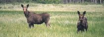
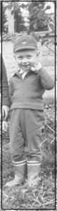
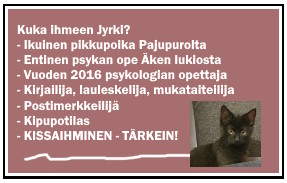
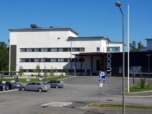

ETUSIVUOPPIMISEN TUKENA JO 26 VUOTTA!!!PSYKOLOGIAN PIKALINKIT PSYKAN VIDEOABIKURSSIT: PSYKOLOGIAN MAAILMA -VIDEOKERTAUSKURSSI ABEILLE (vlogi) - uudet OPSit VANHA ABI KERTAUSKURSSI (opetustilanne) - vanha OPS (OPS 2016 ja 2021): PS1 Toimiva ja oppiva ihminen PS2 Kehittyvä ihminen PS3 Tietoa käsittelevä ihminen PS4 Tunteet ja mielenterveys PS5 Yksilöllinen ja yhteisöllinen ihminen USKONNON JA FILOSOFIAN MUISTIINPANOT ON POISTETTU: Juttu ÄKSässä 9.7.2014 Juttu SEURAssa 28.11.2015 Konsertti Elämäni laulut osa1 2017 Konsertti Elämäni laulut osa2 2017 Konsertti Muistoissa Jamppa 2018 Konsertti Menneitä muistellessa 2019  |
TERVETULOA KOTISIVUILLENI!

KOTISIVUNI ON TARKOITETTU KAIKILLE, JOITA PSYKOLOGIA KIINNOSTAA! ERITYISESTI LUKION OPISKELIJAT, OPETTAJAT JA YLIOPISTO-OPISKELIJAT OVAT ANTANEET MINULLE POSITIIVISTA PALAUTETTA SIVUSTOSTANI, VARSINKIN PSYKOLOGIAN MAAILMA -VIDEOSARJASTANI. KIITOS MUKAVASTA PALAUTTEESTA! OLEN JÄÄNYT ELÄKKEELLE SYKSYLLÄ 2023. OPETTAJANA 35 VUOTTA ALKAEN SAVONLINNAN TAIDELUKIOSTA JA YLI 30 VUOTTA ÄÄNEKOSKEN LUKIOSSA OVAT NYT OHITSE. SIVUT KUITENKIN OVAT AUKI OPISKELIJOITA JA OPETTAJIA VARTEN. TOIVON, ETTÄ NÄISTÄ OLISI MAHDOLLISIMMAN PITKÄÄN HYÖTYÄ KAIKILLE PSYKOLOGIASTA KIINNOSTUNEILLE. KIITOS UPEISTA VUOSISTA JA YHTEISESTÄ MATKASTA. OLEN POISTANUT FILOSOFIAA JA USKONTOA KÄSITTELEVÄT OSIONI SIVUSTOLTANI, KOSKA NE AUTTAMATTA VANHENIVAT PÄIVITYSTEN PUUTTEESSA. PSYKOLOGIAN KERTAUSKURSSINI "PSYKOLOGIAN MAAILMA" KATTAA KAIKKI LUKION PSYKOLOGIAN KURSSIT PS1-PS5 UUDEN OPSin (2021) MUKAISINA. VIDEOT LÖYTYVÄT YOUTUBESTA JA LINKIT VIDEOIHIN MYÖS TÄLTÄ SIVUSTOLTANI. SYYSKUUN 1. PÄIVÄNÄ 2023 YOUTUBESIVUSTONI JA PSYKOLOGIAN MAAILMA -VIDEONI YLITTIVÄT MILJOONAN NÄYTTÖKERRAN RAJAN. PSYKOLOGIAN MAAILMA-sarja käy 30 tunnissa läpi koko lukion psykologian oppimäärän. Kuvasin sarjan kesällä 2018 ja se sisältää peräti 60 osaa. Moni opiskelija on lähettänyt minulle palautetta ja kertonut saaneensa jopa ällän ja vielä useammat eksimian lukemalla muistiinpanoni täältä kotisivuiltani ja katsomalla kertausvideoni. Psykologia on nopeasti kehittyvä tieteenala. Nyt jäätyäni eläkkeelle, tieto käy pikku hiljaa vanhaksi. Tarkista tiedot uusista oppikirjoista ja opettajaltasi. SIVUSTONI SOVELTUU HYVIN MYÖS PERUSOPINTOJAAN TEKEVILLE YLIOPISTO-OPISKELIJOILLE. Oppimisen salaisuus ei ole lukemisessa ja pänttäämisessä. Sinä opit, kun innostut aiheesta. Sinä opit, kun muistat liikkua luonnossa ja huolehtia fyysisestä kunnostasi. Sinä opit - niin sinä todella opit parhaiten, kun muistat nukkua kunnon yöunet! Copyrightista. Sivustoni on täysin vapaasti linkitettävissä, monistettavissa ja käytettävissä opetuksessa ja oppimisessa. Mikäli kopioit osia muistiinpanoistani tai teksteistäni suoraan nettisivuillesi, tulee sinun silloin mainita tekijän nimeni. Kiitos. |
AJANKOHTAISTASain tehdä elämäntyöni Äänekosken lukiossa. Kuvassa uusi lukio, joka valmistui kesällä 2017. TERVETULOA OPISKELEMAAN ÄÄNEKOSKELLE!  Vuonna 2016 läpipuhuttuja videoblogeja ONNELLISUUS (kesto 23m26s) IHMISSUHTEISTA (kesto 25m38s) RAKKAUS (kesto 20m57s) Riippuvuudet-VP (kesto 15m49s) PERSOONALLISUUS (kesto 45m26s) NUKKUMINEN (kesto 35m44s) |